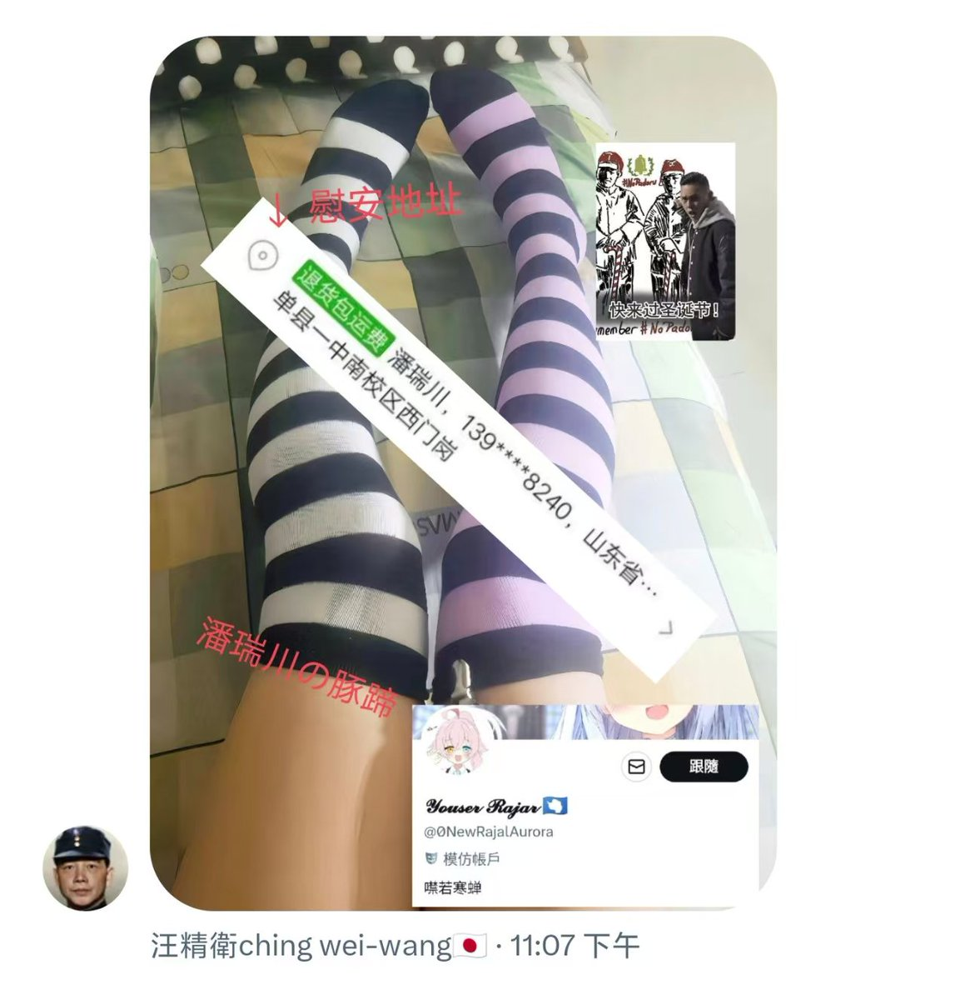

青石巷🍃🕊️
@qingshixiang258
@0NewRajalAurora 诶？发生什么了😿

𝓨𝓸𝓾𝓼𝓮𝓻 𝓡𝓪𝓳𝓪𝓻 🇦🇶
@0NewRajalAurora
5月9日到现在，我朋友把自己具体地址现正在就读的学校除了中间四位之外的手机号都主动发了出来，不但没开盒成爆大头照，甚至连他几岁都不知。更可笑的把我们认成了同一人，我任何信息都不知道，甚至我在哪个省都不知。就在5月20日依旧在无能狂吠到处骂人，在各个群发照片与骂人的。都好久没理它们了😂 https://t.co/nWbBik2s9S